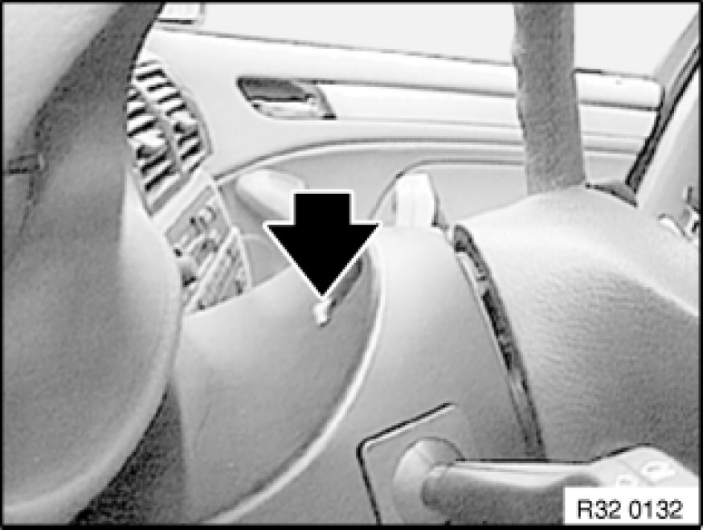
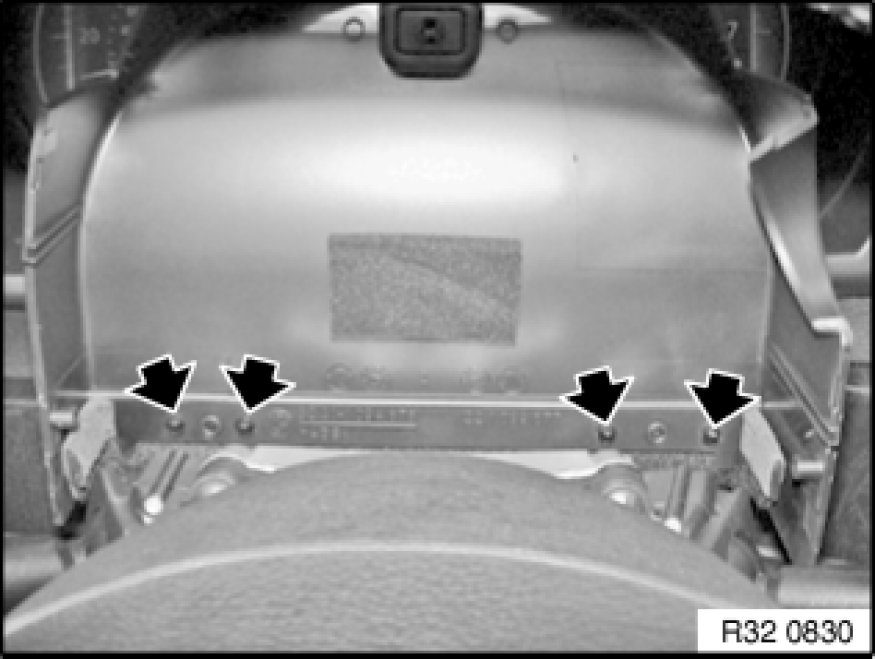

Replacing Upper Section of Steering Column Trim
32 31 003 - Replacing upper section of steering column trim

Necessary preliminary tasks:
- Remove lower section of steering column trim Removing and Installing/Replacing Lower Section of Steering Column Trim

Move steering column in "bottom" and "extended" position.
Release expander rivet.
Installation:
If necessary, replace expansion rivet.

Tilt steering column trim forwards.
Unclip steering column gap cover from steering column trim.
Remove steering column trim.
Installation:
Make sure steering column gap cover is in correct installation position.